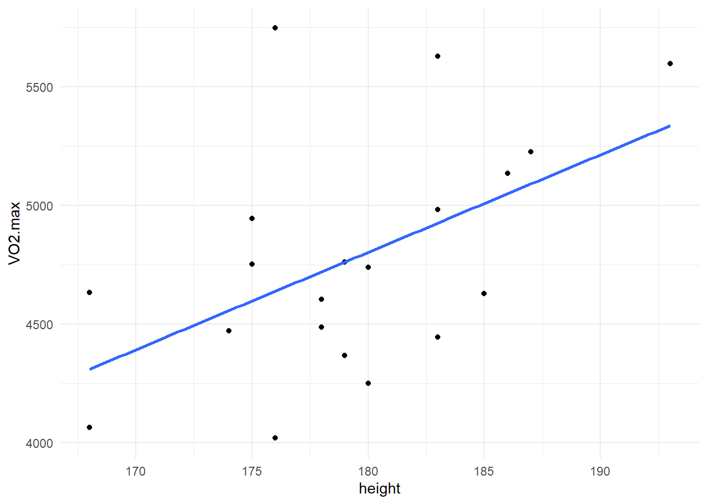
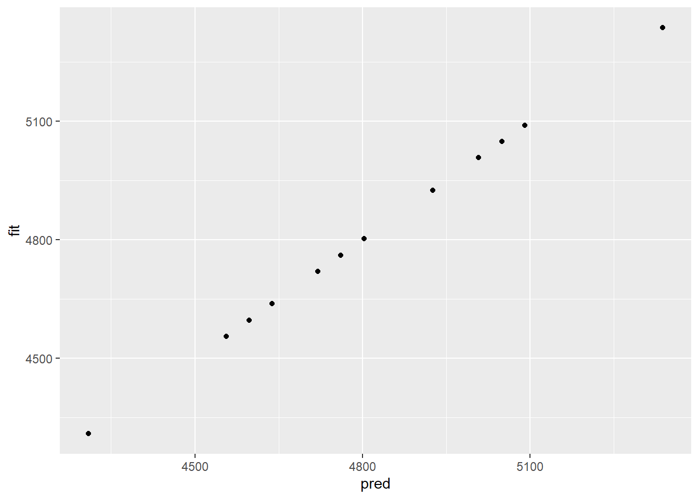
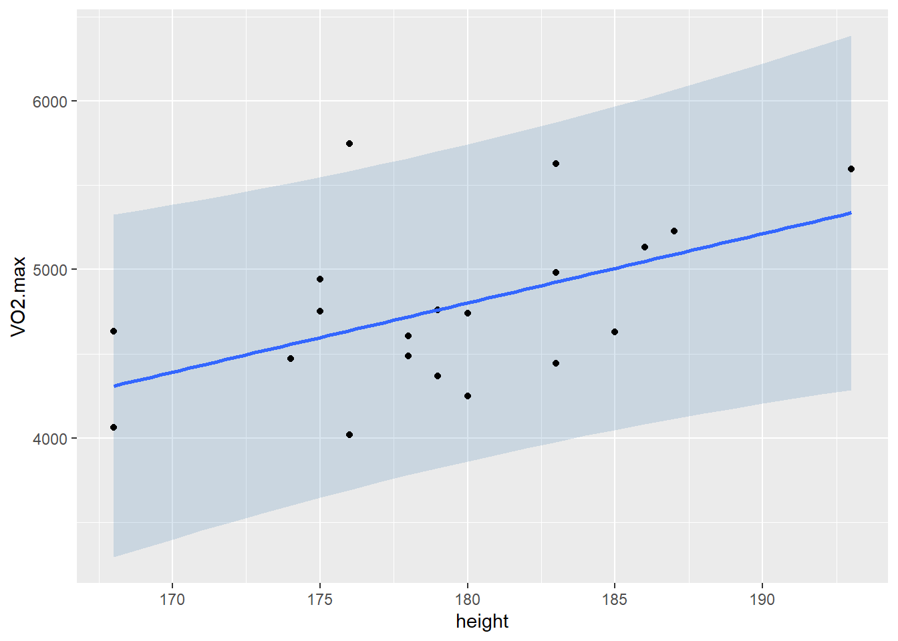
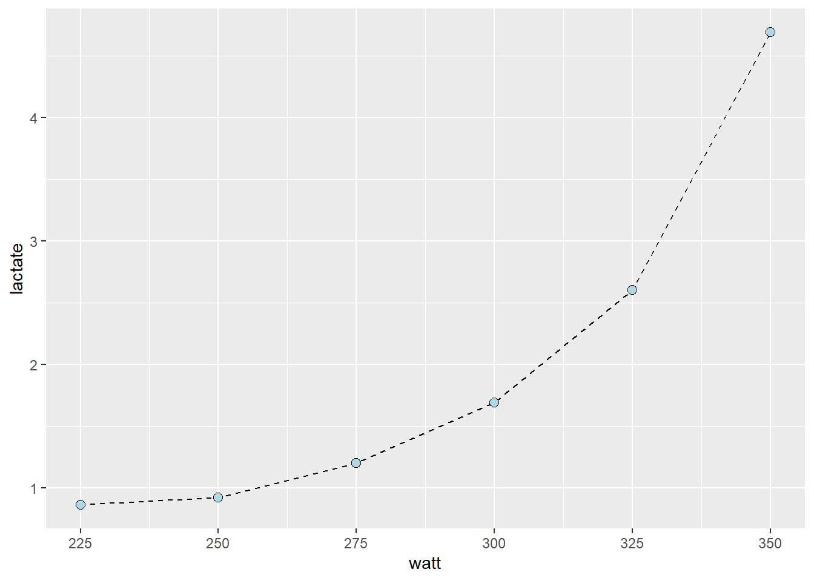
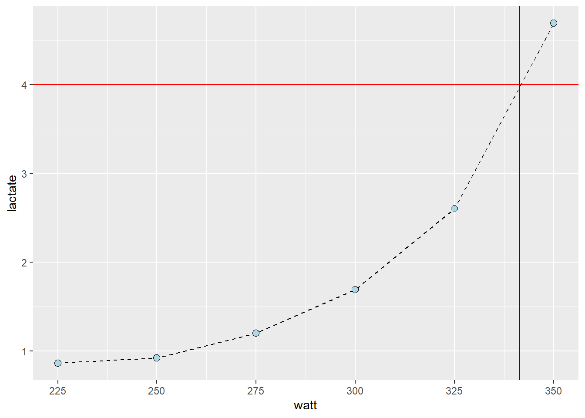
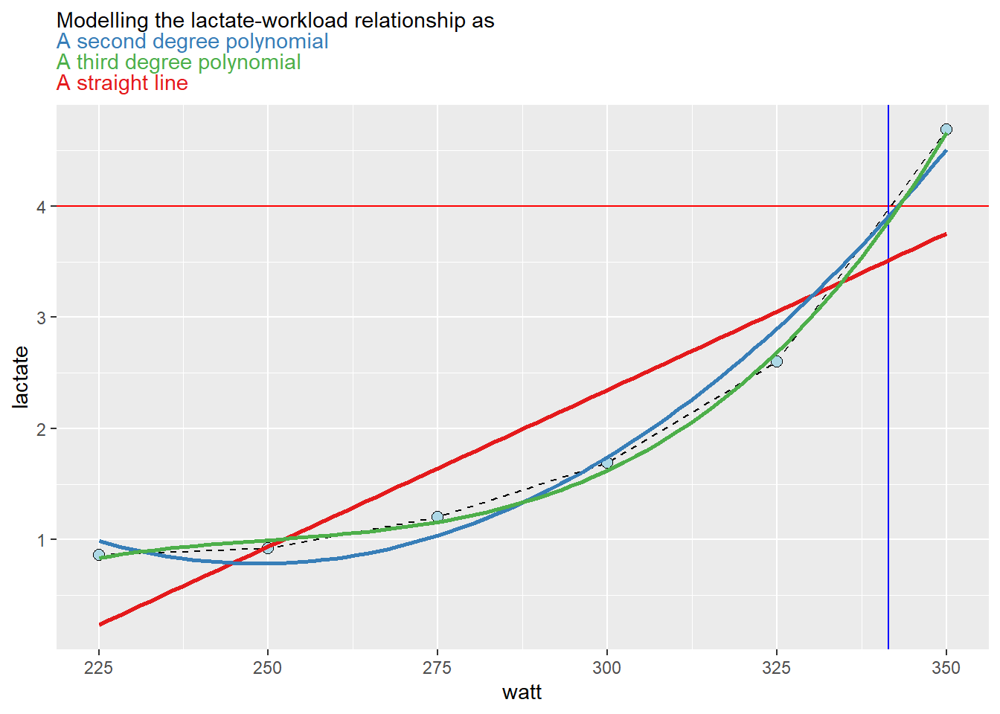
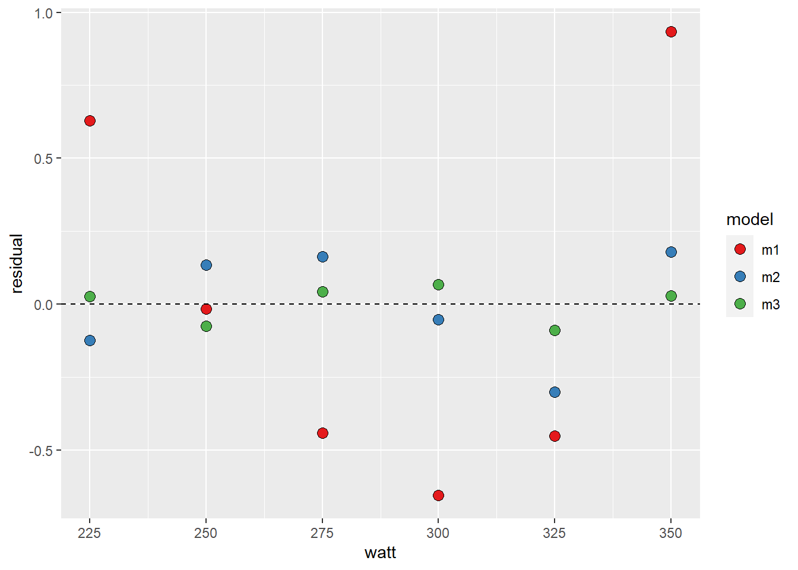
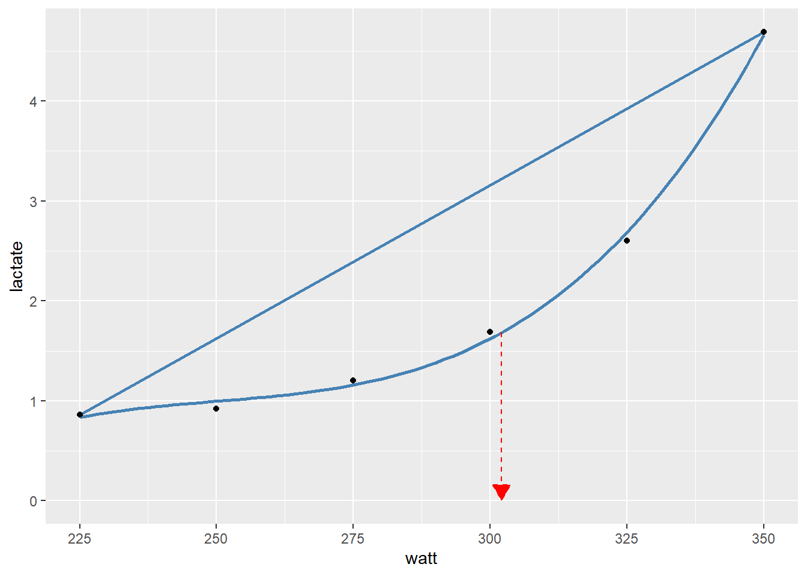

12Linear and curve-linear relationships, and predictions
In the previous chapter we looked at linear relationships, we can imagine these as straight lines. Many things in life are not straight. In this chapter we will add curve-linear relationships to our repertoire. We will start by predicting values.
12.1 Predicting from data
Because of the relationship between inner dimensions (such as the heart chambers) and our height, we might expect to see a relationship between body height and VO2max. The idea is that we will build a model and use this model to make predictions of our outcome with new data. Later we will hopefully see that this is one of the meany benefits of the powerful regression model technique.
As a first step, it is a good idea to get a visual representation of the prospective model (Figure 12.1). In the code chunk below we load the cyclingstudy data set from the exscidata package together with loading tidyverse. We then plot the relationship between height and VO2.max. In the ggplot call, a good starting point is to use geom_point together with geom_smooth which will produce a scatter plot with a best fit line. Notice that method = "lm" and se = FALSE are being used to make sure you get a straight line (method = "lm") and no confidence bands (se = FALSE).
Code
library(tidyverse)library(exscidata)# A simple plot of the associationcyclingstudy %>%filter(timepoint =="pre") %>%select(subject, group, VO2.max, height = height.T1) %>%ggplot(aes(height, VO2.max)) +geom_point() +geom_smooth(method ="lm", se =FALSE) +theme_minimal()

Figure 12.1: Assessing a linear reliationship between variables
We will now construct a model object containing the same straight line that we have visualized above. The lm function (for linear model) takes a formula and a data set as its arguments. We have to save the output of the model in an object to be able to work with it down the line. In the code below I suggest storing the model object as m1.
Code
# Store the data set needed in the model fitting dat <- cyclingstudy %>%filter(timepoint =="pre") %>%select(subject, group, VO2.max, height = height.T1) # Fit the model m1 <-lm(VO2.max ~ height, data = dat)
The above code will store an object in your environment. Using this object, we may now make predictions. The manual way of making a prediction would be to get the coefficients from the model and use them to calculate predicted values based. In the code chunk below, I retrieve coefficients from the model representing the intercept and slope of the model. Remembering the basic mathematics of this simple model tells us that we can predict VO2max using the estimates from the model. These estimates can be retrieved using coef(). The intercept will be the first coefficient (coef(m1)[1]), and the slope will be the second (coef(m1)[2]). Adding them together and multiplying the slope with some new data representing height will get us the prediction.
Our model predicts that an individual that is 179 cm tall will have a VO2max of 4761 ml min-1.
R has some built-in functions for this kind of operation. We can use the predict function to calculate what each observation would look like if it were “on the regression line.” Using predict on the model without new data will give you the same values as the fitted function (Figure 12.2).
Code
# Store outputpred <-predict(m1)fit <-fitted(m1)# Plot the valuesdata.frame(pred, fit) %>%ggplot(aes(pred, fit)) +geom_point()

Figure 12.2: The function fitted(m1) returns the same predicted values as when we use predict(m1).
predict has an argument called newdata; here, we can use a new data frame with the same predictors as in the data set used to fit the model. We may use this new data set to make several predictions from our model.
Code
# New Data Frame containing data we want to predict with ndf <-data.frame(height =c(160, 170, 180, 190))predictions <-predict(m1, newdata = ndf)
If you inspect predictions you will see that an increased height gives us higher predictions of VO2max. What would be your VO2max given this model?
12.2 Uncertanties in predictions
When we are interested in a model’s ability to predict values from new data, we might also be interested in a range of plausible values for our prediction. A prediction interval can be constructed based on the model to tell us where we can expect future observations with a specified level of certainty. The prediction interval has a definition that might be difficult to understand. In short, if we construct infinitely many models and 95% prediction intervals, 95% of the prediction intervals will contain the true value for a future predicted observation.
If we relax the mathematical and philosophical rigor, we can regard the prediction interval as an interval of plausible values for individual observations based on the model. The prediction interval accounts for uncertainty in the predicted mean and the uncertainty associated with individual observations.
Let us visualize the prediction interval (Figure 12.3). The predict function can help us again. We will create a data frame with predicted values over the whole range of observed values in the data set. seq(from = min(dat$height), to = max(dat$height)) creates a sequence of values that goes from the minimum in the data to the maximum. We will then use geom_ribbon to plot them together with the observed data. Notice that we must transform the predicted values into a data frame and include the variables to match our original ggplot2 call.
Code
# Create predictions based on min to max observed height valuespred.vals <-predict(m1, newdata =data.frame(height =seq(from =min(dat$height), to =max(dat$height))), interval ="predict") %>%## Transform to a data frame and add variables to correspond to our data set `dat`data.frame() %>%mutate(VO2.max = fit, height =seq(from =min(dat$height), to =max(dat$height)))# Plot the data and prediction intervalscyclingstudy %>%filter(timepoint =="pre") %>%select(subject, group, VO2.max, height = height.T1) %>%ggplot(aes(height, VO2.max)) +geom_ribbon(data = pred.vals, # We need new data for this layeraes(ymin = lwr, ymax = upr), # Add lower and upper boundsfill ="steelblue", # Fill with a nice coloralpha =0.2) +# Make the fill "transparent"geom_point() +# Add observed points from the original data set geom_smooth(method ="lm", se =FALSE)
`geom_smooth()` using formula = 'y ~ x'

Figure 12.3: Our model with 95% prediction intervals.
Is the model any good? Well, a true value might as well be about 20% higher or lower than the prediction based on body height. It is up to us to consider if this is a good model for predicting VO2max.
To express the boundaries of our 95% prediction interval as a ratio to the predicted values we could use the code below.
In the cyclingstudy data set, data from lactate threshold tests are recorded for each participant. We need to “wrangle” the data set a bit to get the data in a format more suitable for analysis. In the code below I will first select columns needed for the analyses and the filter to retain one participant and one time-point. These data are then converted from a wide to long (tidy) format using the pivot_longer function. Notice that each of the lactate columns starts with lac., this information can be used in pivot_longer when rearranging the data. In pivot_longer we also convert the values to numeric values using as.numeric. Finally, we plot the data.
The resulting plot (Figure 12.4), shows a point for every lactate measurement. We have also connected the dots with geom_line which draws straight lines between each point. The straight line can be used to interpolate values between the observed lactate values. This is a common technique to calculate a lactate threshold, often defined as the intensity at 4 mmol L-1.
Code
library(tidyverse)library(exscidata)cyclingstudy %>%# Select columns needed for analysisselect(subject, group, timepoint, lac.225:lac.375) %>%# Only one participant and time-pointfilter(timepoint =="pre", subject ==10) %>%# Pivot to long format data using the lactate columnspivot_longer(names_to ="watt", values_to ="lactate", names_prefix ="lac.",names_transform =list(watt = as.numeric),cols = lac.225:lac.375) %>%# Filter NA's from the data filter(!is.na(lactate)) %>%# Plot the data, group = subject needed to connect the pointsggplot(aes(watt, lactate, group = subject)) +geom_line(lty =2) +geom_point(shape =21, fill ="lightblue", size =2.5)

Figure 12.4: A workload and lactate relationship
Our next figure shows the value of x (watt, intensity) when y (lactate) is set to 4 (Figure 12.5). The lines are added by eyeballing1 the expected value. This is all fine, we have an approximate lactate threshold.
Code
cyclingstudy %>%# Select columns needed for analysisselect(subject, group, timepoint, lac.225:lac.375) %>%# Only one participant and time-pointfilter(timepoint =="pre", subject ==10) %>%# Pivot to long format data using the lactate columnspivot_longer(names_to ="watt", values_to ="lactate", names_prefix ="lac.",names_transform =list(watt = as.numeric),cols = lac.225:lac.375) %>%# Filter NA's from the data filter(!is.na(lactate)) %>%# Plot the data, group = subject needed to connect the pointsggplot(aes(watt, lactate, group = subject)) +geom_line(lty =2) +geom_point(shape =21, fill ="lightblue", size =2.5) +# Adding straight lines at specific valuesgeom_hline(yintercept =4, color ="red") +geom_vline(xintercept =341.5, color ="blue")

Figure 12.5: Interpolation to estimate the lactate threshold, exercise intensity at 4 mmol L-1
To get a better approximation, we could make use of the curve-linear relationship between exercise intensity and lactate accumulation. The “curvier” the relationship, the more wrong the above approximation would be (as Yoda say, would)2. We can add a curve-linear model on top of our plot using the geom_smooth function in our ggplot call. In the code below, we will actually use several polynomial models together with a straight line to assess their fit (Figure 12.6).
Code
library(ggtext)cyclingstudy %>%# Select columns needed for analysisselect(subject, group, timepoint, lac.225:lac.375) %>%# Only one participant and time-pointfilter(timepoint =="pre", subject ==10) %>%# Pivot to long format data using the lactate columnspivot_longer(names_to ="watt", values_to ="lactate", names_prefix ="lac.",names_transform =list(watt = as.numeric),cols = lac.225:lac.375) %>%# Filter NA's from the data filter(!is.na(lactate)) %>%# Plot the data, group = subject needed to connect the pointsggplot(aes(watt, lactate, group = subject)) +geom_line(lty =2) +geom_point(shape =21, fill ="lightblue", size =2.5) +geom_hline(yintercept =4, color ="red") +geom_vline(xintercept =341.5, color ="blue") +# Adding a straight line from a linear modelgeom_smooth(method ="lm", se =FALSE, formula = y ~ x, color ="#e41a1c") +# Adding a polynomial linear model to the plot# poly(x, 2) add a second degree polynomial model.geom_smooth(method ="lm", se =FALSE, formula = y ~poly(x, 2), color ="#377eb8") +# poly(x, 3) add a third degree polynomial model.geom_smooth(method ="lm", se =FALSE, formula = y ~poly(x, 3), color ="#4daf4a") +labs(subtitle ="Modelling the lactate-workload relationship as<br> <span style = 'color: #377eb8;'>A second degree polynomial</span><br> <span style = 'color: #4daf4a;'>A third degree polynomial</span><br> <span style = 'color: #e41a1c;'>A straight line</span>") +theme(plot.subtitle =element_markdown())# #fee090 represent color codes in th HEX format, palettes for different color can be found # here: https://colorbrewer2.org/

Figure 12.6: Several linear models fitted to the same data, some captures the data better than others.
A polynomial model effectively models our data as a curve-linear relationship. In the figure above, the third degree polynomial model seems to capture the data best. In this case, watt is added to the regression equation in the form of a third degree polynomial:
As we have already seen above (Figure 12.6), this model captures the curve-linear relationship between workload and lactate that occurs when we perform an incremental exercise test.
This type of model is in many cases good enough for the purpose of determining a lactate threshold. It may however be terribly bad in other situations with other kinds of data as the curvature of the model will make useless prediction outside the data.
As we can see in Figure 12.6, the different models are not that different around the 4 mmol L-1 mark. However, the linear model is just wrong at around 300 watts, the second degree polynomial model is wrong at 275 watts. The third degree polynomial model does capture the data pretty well.
We may fit these models formally using lm and check their residuals. First we will store the data set in an object called lactate and the use this data set in several lm calls. The same formula can be used as in geom_smooth, but we must use the actual variable names.
Code
lactate <- cyclingstudy %>%# Select columns needed for analysisselect(subject, group, timepoint, lac.225:lac.375) %>%# Only one participant and time-pointfilter(timepoint =="pre", subject ==10) %>%# Pivot to long format data using the lactate columnspivot_longer(names_to ="watt", values_to ="lactate", names_prefix ="lac.",names_transform =list(watt = as.numeric),cols = lac.225:lac.375) %>%# Remove NA (missing) values to avoid warning/error messages.filter(!is.na(lactate))# fit "straight line" modelm1 <-lm(lactate ~ watt, data = lactate)# fit second degree polynomialm2 <-lm(lactate ~poly(watt, 2, raw =TRUE), data = lactate)# fit third degree polynomialm3 <-lm(lactate ~poly(watt, 3, raw =TRUE), data = lactate)# Store all residuals as new variableslactate$resid.m1 <-resid(m1)lactate$resid.m2 <-resid(m2)lactate$resid.m3 <-resid(m3)lactate %>%# gather all the data from the modelspivot_longer(names_to ="model", values_to ="residual", names_prefix ="resid.", names_transform =list(residual = as.numeric), cols = resid.m1:resid.m3) %>%# Plot values with the observed watt on x axis and residual values at the yggplot(aes(watt, residual, fill = model)) +geom_point(shape =21, size =3) +geom_hline(yintercept =0, lty =2) +# To set the same colors/fills as above we use scale fill manualscale_fill_manual(values =c("#e41a1c", "#377eb8", "#4daf4a"))

Figure 12.7: Assessing the fit f different linear models on a exercise intensity to lactate accumulation relationship.
The third degree polynomial model finds the observed values best, followed by the second degree model. This is not strange as the polynomial model with increased degrees has more flexibility to fit to the data. A problem with polynomial models is that you cannot fit e.g. a forth degree polynomial model with only four data points. You may also encounter some over-fitting to for example, a bad measurement. Let’s settle for the third degree model.
The next step will be to predict x from y. Remember that we have modeled the effect of x on y, i.e. the effect of exercise intensity on lactate. Using predict we may easily predict a lactate value for a specific value of watt. Since we want the inverse prediction we have to use some tricks in our prediction. The code below creates a data set of intensity values watt using the seq function which basically creates a vector of number with a specific distance between them. We can then use this vector of numbers to predict lactate values and find the value closest to 4 mmol L-1.
Code
# new data data framendf <-data.frame(watt =seq(from =225, to =350, by =0.1)) # high resolution, we can find the nearest10:th a wattndf$predictions <-predict(m3, newdata = ndf)# Which value of the predictions comes closest to our value of 4 mmol L-1?# abs finds the absolute value, makes all values positive, # predictions - 4 givs an exact prediction of 4 mmol the value zero# filter the row which has the prediction - 4 equal to the minimal absolut difference between prediction and 4 mmollactate_threshold <- ndf %>%filter(abs(predictions -4) ==min(abs(predictions -4)))
Our best estimate of the lacatate threshold is 343. We have approximated the exercise intensity at a specific value of lactate.
12.3.1 More on lactate thresholds
A fixed lactate threshold might not be the most informative marker of exercise performance. If we instead determine the exercise intensity when lactate has increased a certain amount from a baseline value it turns out that we will be able to predict real-world performance more precisely (Carlsson et al. 2012). Similarly, assessing the point of a lactate curve with the largest perpendicular distance to a straight line between the first and last observation also captures a relative increase rather than a fixed point (Machado, Nakamura, and Moraes 2012).
Machodo (2012) use a third degree polynomial model to calculate lactate thresholds as the graphically shown with the red arrow in Figure 12.8.
Code
dat <- cyclingstudy %>%# Select columns needed for analysisselect(subject, group, timepoint, lac.225:lac.375) %>%# Only one participant and time-pointfilter(timepoint =="pre", subject ==10) %>%# Pivot to long format data using the lactate columnspivot_longer(names_to ="watt", values_to ="lactate", names_prefix ="lac.",names_transform =list(watt = as.numeric),cols = lac.225:lac.375) %>%# Filter NA's from the data filter(!is.na(lactate)) %>%data.frame()# Fit a third degree polynomial model (with raw orthogonal)polymodel <-lm(lactate ~poly(watt, 3, raw =TRUE), data = dat)delta_mod <-lm(lactate ~ watt, data =filter(dat, watt %in%c(min(watt), max(watt)) ))# Calculate the point with the largest perpendicular distance between a straight line # and the 3rd degree polynomial. d1 <-coef(polymodel)[2]d2 <-coef(polymodel)[3]d3 <-coef(polymodel)[4]delta <-coef(delta_mod)[2]# Equation from Machodopoly_threshold <- (-d2 +sqrt((d2^2-3* d3 * (d1 - delta)) )) / (3* d3)# Plotting the resultsdat %>%ggplot(aes(watt, lactate)) +geom_smooth(method ="lm", formula = y ~poly(x, 3), se =FALSE, color ="steelblue") +geom_segment(aes(y =pull(filter(dat, watt ==min(watt)), lactate), yend =pull(filter(dat, watt ==max(watt)), lactate), x =min(watt), xend =max(watt)), color ="steelblue", linewidth =1) +geom_segment(aes(y =predict(polymodel, newdata =data.frame(watt = poly_threshold)), yend =0, x = poly_threshold, xend = poly_threshold), color ="red", lty =2, arrow =arrow(type ="closed", length =unit(4, "mm"))) +geom_point()

Figure 12.8: Using a polynomial model to determine the lactate threshold.
There a several ways of doing such calculations, and many other concepts of lactate thresholds exists. Newell (Newell et al. 2007) has developed R code for calculating several of these concepts. Others have implemented R code in applications to calculate lactate thresholds, for example lactate dashboard.
Most techniques and concepts rely on an underlying regression model.
12.4 References
Carlsson, Magnus, Tomas Carlsson, Daniel Hammarström, Toomas Tiivel, Christer Malm, and Michail Tonkonogi. 2012. “Validation of Physiological Tests in Relation to Competitive Performances in Elite Male Distance Cross-Country Skiing.”Journal of Strength and Conditioning Research 26 (6): 1496–1504. https://doi.org/10.1519/JSC.0b013e318231a799.
Machado, Fabiana Andrade, Fábio Yuzo Nakamura, and Solange Marta Franzói De Moraes. 2012. “Influence of Regression Model and Incremental Test Protocol on the Relationship Between Lactate Threshold Using the Maximal-Deviation Method and Performance in Female Runners.”Journal of Sports Sciences 30 (12): 1267–74. https://doi.org/10.1080/02640414.2012.702424.
Newell, J., D. Higgins, N. Madden, J. Cruickshank, J. Einbeck, K. McMillan, and R. McDonald. 2007. “Software for Calculating Blood Lactate Endurance Markers.” Journal Article. Journal of Sports Sciences 25 (12): 1403–9. https://doi.org/10.1080/02640410601128922.